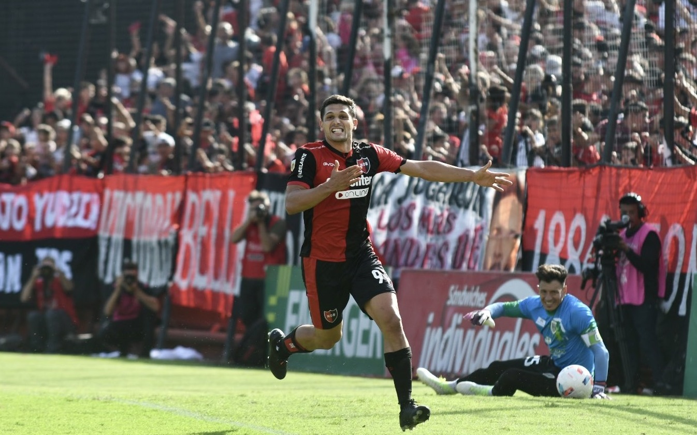

Triunfo para afianzarse
Newell's derrto 1 a 0 a Banfield en el Coloso y se mantiene en los puestos de vanguardia
El de este miércoles por la tarde puede ser un triunfo clave para las aspiraciones de clasificación. La Lepra venía de conseguir un agónico festejo ante Patronato y ahora, con los tres puntos cosechados contra el Taladro, afianzó su lugar en la tabla.
La alineación inicial para este compromiso fue: Iván Arboleda; Armando Méndez, Cristian Lema, Willer Ditta, Martín Luciano; Justo Giani, Pablo Pérez, Julián Fernández, Ramiro Sordo; Djorkaeff Reasco y Juan Manuel García. No obstante, ya temprano Javier Sanguinetti debió meter mano en el equipo con la inclusión de Juan Fernando Garro en reemplazo del lesionado Sordo.
El trámite a lo largo de los 90 minutos fue trabado y sin demasiadas emociones, pese a que desde el comienzo quedó clara la intención de Newell’s de salir a buscarlo y la menos ambiciosa propuesta del visitante. En ese contexto, la más clara de la etapa inicial fue una jugada de pelota parada en la que Ditta capturó un rebote dentro del área y sacó un disparo bien rechazado por el arquero Bologna.
Una de las acciones que marcaron un quiebre en la tarde llegó a los 39’, cuando Gregorio Tanco se ganó la segunda amarilla por una falta sobre Reasco y dejó a su equipo con diez hombres. A partir de ahí se acentuaron las posturas de uno y otro, siendo la Lepra el único protagonista del encuentro.